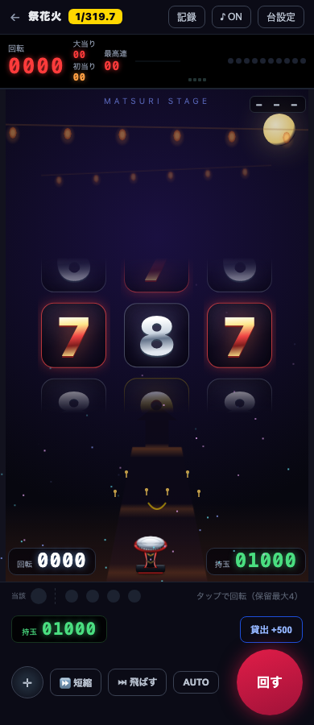
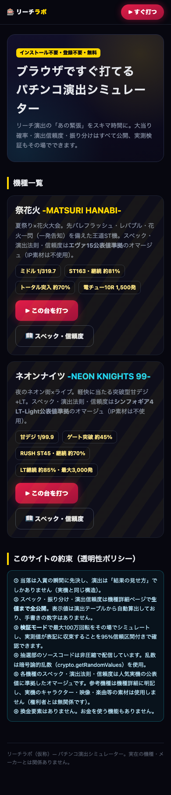

ブラウザで動く
演出シミュレーターを、
Claude Code
で作った。
claude
$ claude
❯
まず、
日本語
で頼む
演出
リーチ・図柄＝結果の見せ方
抽選エンジン
乱数・確率＝当落を先に決める
記録
回転数・当たりの履歴
結果だけ渡す
回転数・当たり
抽選エンジンと
演出を
分けて設計
テスト実行
毎回・公開前に
抽選エンジン
項目
ブラウザ自動操作
項目
公開前チェック preflight
項目
自動テスト
項目
自動テスト
235
項目を
毎回通す

外部依存ゼロ
PWA・オフライン起動
2026-08-07 公開
公開
して、スマホで遊べる
reachlab.pages.dev
MAKING
K
MAKING
#02
AIで作って、本番に出す。
MAKING
K
Kenji Ido
@idk0723ai
作った実物は HP で
kenji6836.github.io